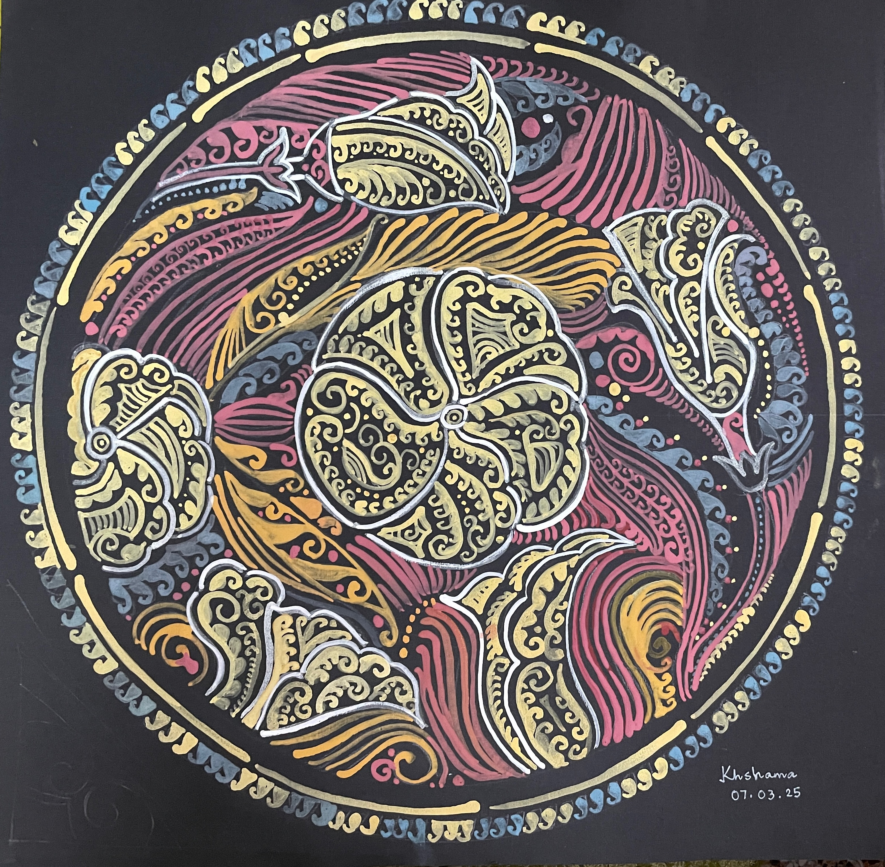
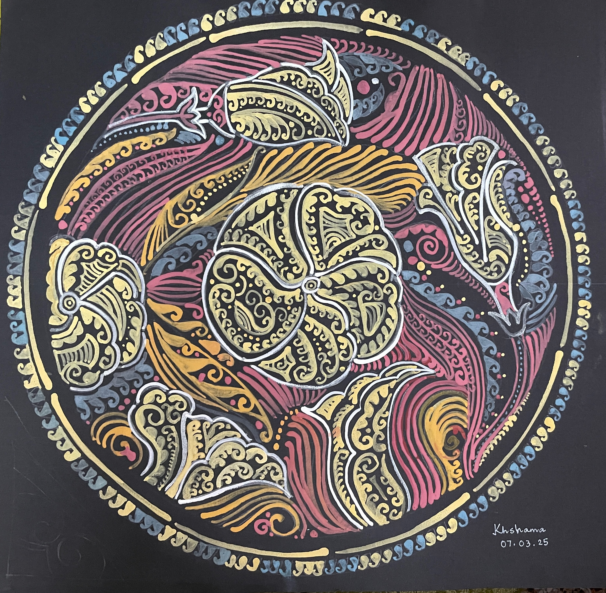

On the left is a realistic pencil sketch of yellow oleanders (Bengali: Kolke Phul), while on the right is a re-imagination of the same flower with motifs and color traditionally used in alpana.

Haimonti is trained as a computer scientist, but loves to read, paint, and write in her spare time.